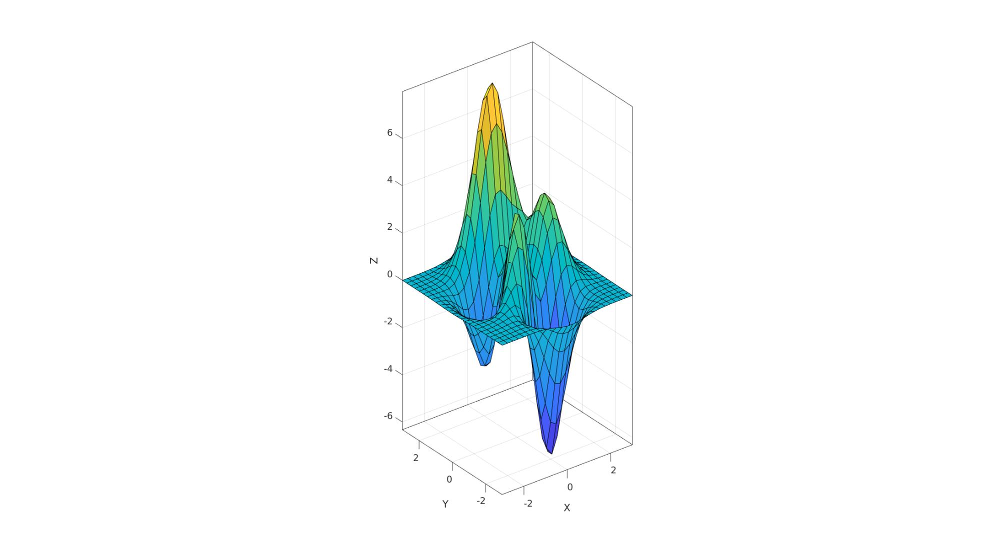

vcw
Below is a demonstration of the features of the vcw function
Contents
Syntax
vcw(hf,buttonOpt);
Description
The vcw function, the view control widget, allows the user to rotate, pan and zoom a figure using key presses and mouse gestures. This makes 3D view manipulation feel like what one would expect of a CAD package.
The vcw widget is loaded by default when using cFigure but can be loaded for any other figure by using:
figure; vcw;
You can load vcw either before or after creating axes. Once vcw is added as a button based widget to a figure window, it can be activated by pressing the button or by pressing the 'v' key. Furthermore calling vcw, when the widget is already present, will activate it as well. It is recommended to activate vcw once all graphics entities and plotting objects have been created.
Once loaded users may press v key to activate widget (or press the toolbar button). Press i to show the following help information:

Examples
clear; close all; clc;
Using the preloaded view control widget (vcw) in cFigure
A cFigure window with the view control widget loaded by default. To activate widget press v or click on vcw button in the toolbar.

Use with figure
The default MATLAB figure does not contain the view control widget. To load it here the user must enter vcw; either before or after axes are created. e.g.:
figure; surf(peaks(25)); axis equal; axis tight; vcw;
which is equivalent to:
figure; vcw; surf(peaks(25)); axis equal; axis tight;
Tip
You can create your own figure function that simply contains figure; vcw; to create a standard MATLAB figure containing the view control widget.
Automatically activating vcw in a script
Below several examples are provided to automatically activate vcw in a script.
Some example data
[X,Y,Z]=peaks(25);
METHOD 1: Calling gdrawnow for a figure window with the vcw button present
cFigure; %Opens a cFigure window which contains the vcw button surf(X,Y,Z); %Visualize something in an axis axisGeom; %Set axis options for geometry viewing gdrawnow; %drawnow and activate vcw

METHOD 2: Calling vcw for a figure window with the vcw button (same as calling gdrawnow)
cFigure; %Opens a cFigure window which contains the vcw button surf(X,Y,Z); %Visualize something in an axis axisGeom; %Set axis options for geometry viewing vcw; %Activate vcw
METHOD 3: By manually changing button state
The vcw button can be accessed from the figure UserData structure. E.g. if hf is the figure handle then the state for the button is found at: hf.UserData.vcw.buttonHandle.State
hf=cFigure; %Opens a cFigure window which contains the vcw button surf(X,Y,Z); %Visualize something in an axis axisGeom; %Set axis options for geometry viewing drawnow; %Manually toggle to button hf.UserData.vcw.buttonHandle.State='On'; %Activate vcw


GIBBON www.gibboncode.org
Kevin Mattheus Moerman, gibbon.toolbox@gmail.com
GIBBON footer text
License: https://github.com/gibbonCode/GIBBON/blob/master/LICENSE
GIBBON: The Geometry and Image-based Bioengineering add-On. A toolbox for image segmentation, image-based modeling, meshing, and finite element analysis.
Copyright (C) 2006-2020 Kevin Mattheus Moerman
This program is free software: you can redistribute it and/or modify it under the terms of the GNU General Public License as published by the Free Software Foundation, either version 3 of the License, or (at your option) any later version.
This program is distributed in the hope that it will be useful, but WITHOUT ANY WARRANTY; without even the implied warranty of MERCHANTABILITY or FITNESS FOR A PARTICULAR PURPOSE. See the GNU General Public License for more details.
You should have received a copy of the GNU General Public License along with this program. If not, see http://www.gnu.org/licenses/.